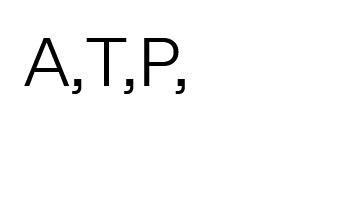

ATP Visiting Artist Talk: Leslie Hewitt
The Department of Art Theory and Practice at Northwestern University welcomes Leslie Hewitt for an artist talk as part of the 2025-26 Visiting Artist series.
Hewitt, born in 1977 in New York, New York, lives and works between New York, NY and Houston, TX. Working with photography, sculpture, and site-specific installations, Leslie Hewitt addresses fluid notions of time. Her work oscillates between the illusionary potential of photography and the physical weight of sculpture. In her photographed arrangements, she isolates personal effects and the residue of material culture to consider the fragile nature of everyday life. Her approach to photography and sculpture revisits the still life genre from a post-minimalist/civil-rights perspective. Her geometric compositions, which she frames and crystallizes through the spare assemblage of ordinary things, suggests the porosity between intimate and sociopolitical lives. Whether discreetly arranged in conceptually entangled layers or presented plainly, Hewitt often includes or is inspired by mementos such as family pictures, as well as books and vintage magazines that reference the Black literary and popular-cultures of her upbringing. Her practice as an artist points to the mechanisms of the construction of meaning and memory through decisively challenging both by unfolding formal, rather than didactic, connections in her contrapuntal compositions and distinctive take on spatiality.
Hewitt studied at the Cooper Union for the Advancement of Science and Art, the Yale University School of Art, and at New York University, where she was a Clark Fellow in the Africana and Visual Culture Studies programs. She was included in the 2008 Whitney Biennial and the recipient of the 2008 Art Matters research grant to the Netherlands. A selection of recent and forthcoming exhibitions include the Museum of Modern Art in New York; the Studio Museum in Harlem; Artists Space in New York; Project Row Houses in Houston; and LA > < ART in Los Angeles. Hewitt has held residencies at the Studio Museum in Harlem, the Museum of Fine Arts, Houston, the Radcliffe Institute for Advanced Study at Harvard University and the American Academy in Berlin, Germany amongst others.